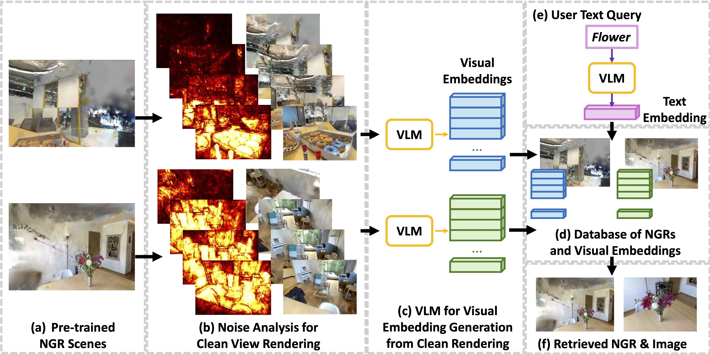

This work presents Retri3D, a framework that enables
accurate and efficient
retrieval of 3D scenes represented as NGRs from large data stores using text queries.
We introducea novel Neural Field Artifact Analysis technique, combined with a Smart
CameraMovement Module, to select clean views and navigate pre-trained 3DNGRs.
Abstract
Learnable 3D Neural Graphics Representations (3DNGR) have emerged as promising 3D representations for
reconstructing 3D scenes from 2D images. Numerous
works, including Neural Radiance Fields (NeRF), 3D Gaussian Splatting (3DGS),
and their variants, have significantly enhanced the quality of these representations.
The ease of construction from 2D images, suitability for online viewing/sharing,
and applications in game/art design downstream tasks make it a vital 3D representation, with potential
creation of large numbers of such 3D models. This necessitates
large data stores, local or online, to save 3D visual data in these formats. However,
no existing framework enables accurate retrieval of stored 3DNGRs. In this work,
we propose, Retri3D, a framework that enables accurate and efficient retrieval of 3D
scenes represented as NGRs from large data stores using text queries. We introduce
a novel Neural Field Artifact Analysis technique, combined with a Smart Camera
Movement Module, to select clean views and navigate pre-trained 3DNGRs. These
techniques enable accurate retrieval by selecting the best viewing directions in
the 3D scene for high-quality visual feature embeddings. We demonstrate that
Retri3D is compatible with any NGR representation. On the LERF and ScanNet++ datasets, we show significant
improvement in retrieval accuracy compared
to existing techniques, while being orders of magnitude faster and storage efficient.
Overview

Overview of Retri3D: (a) Retri3D enables the storage and retrieval of any
neural graphics representation (NGR). (b) We perform noise analysis and viewpoint
selection to select high-quality artifact-free views. (c) Visual embeddings for retrieval
are generated using a pre-trained
Vision-Language Model (VLM). (d) Both NGRs and visual embeddings are stored in the
database. (e) Given a user query, we use the same VLM to generate a corresponding
text embedding. (f) Retrieval of the relevant scene is based on the highest cosine
similarity between the text and visual embeddings, returning the NGR and optionally,
a rendered image, to the user.
Results
Interpolating states
We can also animate the scene by interpolating the deformation latent codes of two input
frames. Use the slider here to linearly interpolate between the left frame and the right
frame.
Start Frame
Loading...
End Frame
Citation
@inproceedings{anonymous2024retri3d,
title={Retri3D: 3D Neural Graphics Representation Retrieval},
author={Anonymous Authors},
booktitle={International Conference on Learning Representations},
year={2025}
}